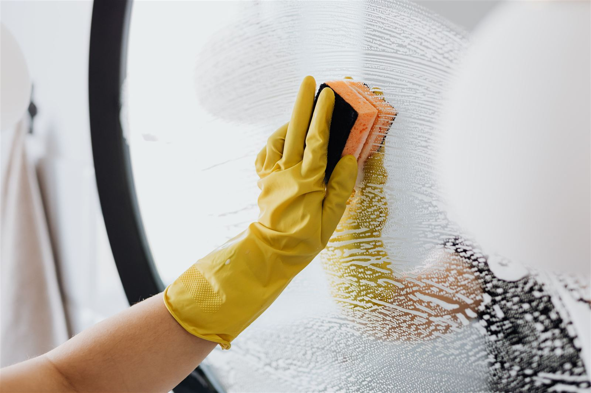

Ev temizliği
1+1 dairelerin çoğu 2–3 saatte, 2+1 ve 3+1 dairelerin çoğu 3–5 saatte biter. Süre, eşya yoğunluğuna ve evin durumuna göre uzar.
Ev işinin kapsamıAntalya · yerel temizlik
Üç ilçenin mahallelerine randevuyla geliyoruz. Ekip malzemesini yanında getirir. Şantiye ve inşaat sonrası temizlik almıyoruz.

Hizmetler
Hepsi kurulu, kullanılan mekânlar. Moloz, boya kazıma ve şantiye yok.
1+1 dairelerin çoğu 2–3 saatte, 2+1 ve 3+1 dairelerin çoğu 3–5 saatte biter. Süre, eşya yoğunluğuna ve evin durumuna göre uzar.
Ev işinin kapsamı
Büro, muayene ve küçük iş yerleri. Masa üstündeki evrak yerinden oynatılmaz. Saat, açılıştan önce ya da mesai bitince kilitlenir.
Ofis işinin kapsamı
Merdiven, korkuluk, asansör kabini ve giriş. Kat sayısı ve asansör olup olmadığı süreyi belirler. Haftalık plan yapılabilir.
Apartman işinin kapsamıHizmet bölgesi
Antalya dışında ve bu üç ilçenin dışında iş almıyoruz. Mahalle adını randevuda yazmanız yeterli.
39 mahalle. Liman ve Hurma’daki sitelerden Geyikbayırı ve Çakırlar’a kadar.
Konyaaltı mahalleleri55 mahalle. Lara aksındaki yüksek katlar ve Kaleiçi tarafındaki dar merdivenli binalar.
Muratpaşa mahalleleri68 mahalle. Düden, Teomanpaşa, Kuzeyyaka ve Varsak’ta daire ve merdiven işi.
Kepez mahalleleriRandevu
WhatsApp’tan ilçe, mahalle, oda sayısı ve istediğiniz günü gönderin. İki hat da açıktır.
Ekip o saatte gelir. Ofiste mesai saatiyle çakışmaması için saati birlikte seçeriz.
Yerler silinir, banyo ve mutfak işi biter, çöpler poşetlenir. Kullanılan malzeme evde bırakılmaz.
Kapsam
Sınır
Fotoğraflar
Ev, banyo, cam ve yüzey işlerinden. İnşaat veya şantiye görüntüsü yoktur.


Sorular
Hayır. Yalnızca oturulan ev, çalışan ofis ve apartman ortak alanlarını temizliyoruz. Şantiye, tadilat molozu, alçı ve boya kazıma işi almıyoruz.
Antalya’da Konyaaltı’nın 39, Muratpaşa’nın 55 ve Kepez’in 68 mahallesine geliyoruz. Bu üç ilçenin dışında hizmet vermiyoruz.
0 (533) 097 89 24 veya +90 (505) 068 03 07 numarasına WhatsApp’tan yazın. İlçe, mahalle, oda sayısı ya da ofis metrekaresi ve istediğiniz günü belirtin. İletişim formunu doldurursanız mesaj aynı hatta açılır.
Evet. Hat haftanın 7 günü, günün her saati açıktır. Ekip, anlaştığımız saatte adrese gelir.
Evet. Ekip temizlik malzemesi ve ekipmanıyla gelir. Evinizde belirli bir ürün kullanılmasını istiyorsanız randevu mesajında yazın.
Yayınlanmış sabit fiyat listemiz yok. Oda sayısı, banyo sayısı, evin durumu ve işin tek sefer ya da haftalık olması ücreti değiştirir. Bu bilgileri WhatsApp’tan yazın; rakamı mesajda netleştirelim.
Hatlar
0 (533) 097 89 24 ve +90 (505) 068 03 07. Form doldurmak isterseniz mesaj seçtiğiniz hatta açılır, sitede saklanmaz.